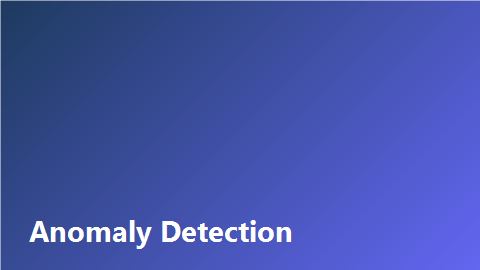

Ближайший разбор
RAG в корпоративной среде
14 апреля 2026 · встреча раз в две недели
Открыть разбор →Недавно в базе знаний
 Статья
Статья
Building Production RAG Systems
Обзор архитектуры RAG для корпоративных баз знаний: индексация, retrieval, guardrails.

ПрезентацияAnomaly Detection with Isolation Forest
Практическое применение Isolation Forest для выявления аномалий в транзакционных данных.
 Статья
Статья
LangGraph for Multi-Agent Workflows
Оркестрация агентов для автоматизации аналитических пайплайнов в аудите.